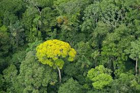

MULTIMEDIA ON WILDLIFE
Wildlife refers to all the living organisms that inhabit our planet's natural environments, including animals, plants, and microorganisms. From the majestic African elephant to the tiny hummingbird, wildlife encompasses an incredible variety of species, each with its own unique behaviors, adaptations, and beauty.
Wildlife can be found in every corner of the globe, from the dense jungles of the Amazon to the frozen tundra of the Arctic. They play a vital role in our ecosystem, providing food and shelter for other species, pollinating plants, and maintaining balance within their respective habitats.
Unfortunately, many wildlife populations are under threat due to human activities such as habitat destruction, pollution, and climate change. Protecting and preserving these magnificent creatures and their natural habitats is crucial not only for their survival but for the health and well-being of our planet as a whole.
Forest
Trees are tall, perennial plants that have a single stem or trunk with branches and leaves that grow out from it. They are an essential part of the ecosystem, providing oxygen, habitat for wildlife, and resources for humans.
Leopard

A leopard is a large and powerful wild cat with a distinctive spotted coat, sharp claws, and excellent hunting abilities.